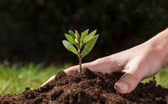
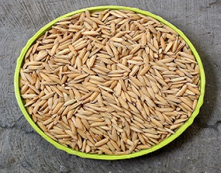

1. Soil Processing
The preparation of the land for the cultivation of maize starts with cleaning the growing weeds. Soil cultivation is needed to produce a soil physical environment that is conducive to plant growth. In preparing land for planting corn, it can be done in several ways, including conventional soil processing or what is commonly called perfect soil cultivation (OTS), and conservation soil processing.
2. Selection of Superior Rice Seeds
Good corn seeds are those that:
1) Clean Seeds From Mixed Weeds Or Other Plant Seeds.
2) The Seeds Look Dry And Shiny.
3) The seeds are normal size and not defective. and
4) Fertile (filled and solid) or non-hollow seeds.
5) The Seeds Come From A Clear Variety